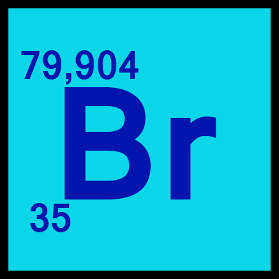
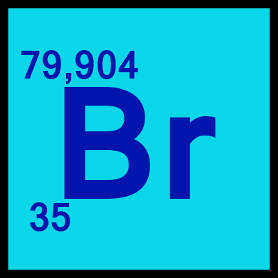

- Atomnummer: 17
- Atommassa: 35,45
- Ämnesklass: Halogen
- Grupp: 17
- Period: M(3:e Perioden)
- Block: P-blocket
- Aggregationstillstånd: Gas
- Elektronkonfiguration: 2 8 7
- Smältpunkt: -101,5°C (171,6 K)
- Kokpunkt: -34°C (239 K)
- Trippelpunkt: N/A
- Kritisk punkt: N/A
- Densitet: 3,2 g/L
- Oxidationstillstånd: +VII +VI +V +IV +III +II +I -I
- Elektronnegativitet: 3,16
- Jonisationspotential: 1251 KJ/mol(1:a)
- Kovalent radie: 102+-4 pm
- Van der Waal radie: 175 pm
KLOR